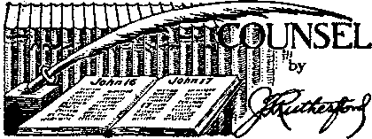
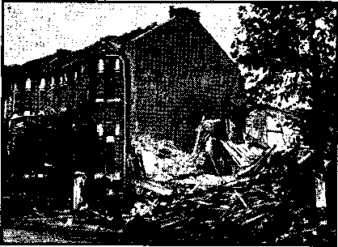

Why All the Misrepresentation?
Direct Contact with the Demons
Counsel by J. F. Rutherford
Theocratic Convention, Manchester, England 18
London Cripples’ Faithful Witnessing
British Comment
Church Buildings and Hospitals
Re-establishment of Holy Roman Empire 2
Later Facts re Las Cruces, N. Mex.
Published every other Wednesday by
Watchtower bible and tract society, inc.
117 Adams St., Brooklyn, N. Y , U. S A.
Editor Clayton J. Woodworth
Business Manager Nathan II. Knorr
Five Cents a ‘Copy JI a year in the United States (1.25 to Canada and all other countries.
. NOTICE TO SUBSCRIBERS
Remittances* For your own safety, remit by poetal or s pXpreM money order. When coin or currency is lost : in the ordinary malls, there is no redress. Remittances : from countries other than those named below may be ■ made to the Brooklyn office, but only by International ; postal money order. i
Rscel;rf Of a new or renewal BuhnerIption will be ac- '■ knowledge^ only when rctjueflted. Notice of Expiration ; id went ’with the journal one month before subscription expires* Tlease renew promptly to avoid loss of copies, tend change of address direct to us rather than to the poet office* Your request should reach ub at least two WHka before the date of Issue with which it is to take effect* Send your old aa well as the new address. Copies will not be forwarded by the post office to your naw address unless extra postage Is provided by you.
Publtahed also tn Afrikaans, Bohemian, Danish, Dutch, Finnish, French! German, Greek, Hungarian, Japa*
Norwegian, Polish, Portuguese, Spanish, Swedish, Ukrainian; also special Australian edition in English.
OFFICES FOR OTHER COUNTRIES
England 34 Craven Terrace, London, W, 2
Canada 40 Irwin Avenue, Toronto 6, Ontario
Australia 7 Beresford Road, Strathfield, N S W, South Africa 623 Boston House, Cape Town
Sintered as second-class matter at Brooklyn, N, Y., under the Act of March 3, 1379.
Memoranda ;
Re-establishment of Holy Roman Empire \
♦ The political and social order that resulted , from the Reformation, both in Europe and in America, is regarded by the Catholic Church ■ as pagan and anti-Christian; they give it the ' name of “pseudo-democracy”. This is to be found in all official Catholic writings and is the burden of all papal encyclicals. ... Whatever opinion the Catholic Church may now express about Hitler and his'Nazi-Socialism, it stands 100 percent with him and the other Fascist dictators in ’the avowed objective of destroying the political and social order that came out of the Reformation. . . . What the Catholic Church is hoping and working for as a result of the present death struggle between the Fascist and Democratic blocs is the re-establishment in Europe of the “Real State”, a rigid hierarchical system wherein inferiors are subject to superiors. . . . The Jesuit Order has its “Aryan paragraph” corresponding exactly to that of Hitlerism. Its Constitutions contain six impediments against reception into the Order, the first of which is Jewish descent up to the fourth generation. If Jewish descent is discovered after a candidate’s admission it pievents his “radiation”. . . . This identity of interests between Nazi-Fascism and Jesuit Catholicism in the matter of opposition to the mixture of races and religions is something that cannot be denied. ■ And this ideology is the prime cause of the war that is devastating Europe at the present time. Hitler, the fanatic, has already gone a long way to bring it to realization. If he succeeds in making it permanent, the “new order*’ which he has vowed to bring about in Europe will be what the Catholic Church has been strenuously working for during the past four centuries.—L. H. Lehman, in The Converted Catholic. [Hitler was Jesuit-trained.—Ed.]
Later Facts re Las Cruces, N, Mex.
♦ Correcting inaccurate and misleading newspaper stories, Jehovah’s witnesses jailed at Las Cruces say their persecutor was City Attorney E. G. Shannon, and that Judge Apodaca was not in any way antagonistic, but shook hands with every one of the witnesses, with tears in his eyes, after he dismissed them.
“And in His name shall the nations hope.’*—Matthew 12:21, A.R.V.
Volume XX11
Brooklyn, N. Y<, Wednesday, November 27, 1940
Number BOS
Eglon’s Excrement (In Two Parts—Part 2)
The fires of war in Europe rage more fiercely. Hitler’s new order has swallowed up the Continent and now threatens the free people of the British Isles. Just what are Hitler’s aims? and from whom does he borrow his pattern for remaking the whole world? A Nazi was once quoted by the New York Times as calling their advance the ‘Catholic revolutionary movement’. A little study will show that the Nazi was well informed. Observing the handmade governments that the Nazis have fashioned for the conquered nations such as France, an age-old shape appears. It is the Jesuit design for enslaving mankind for the glory of the Catholic Church. For four hundred years the Jesuits have sought to abolish the Reformation. Hitler has undertaken this identical crusade for his masters'in Rome. It is not a pretty picture, nor is “Eglon’s Excrement” a pleasant title. (Judges 3:12-22) But as the origin and model for Hitler’s aggressions is found in Jesuit lore, it seems appropriate and profitable to delve into the Jesuit secret manual of wickedness. It is dirty indeed, but better' uncovered than permitted to flourish unseen and devour without warning 1 .
Nor is the terrible disease limited to Europe alone. The first American sufferers of this foreign plague are Jehovah’s witnesses. The papers have carried many stories of Jesuitized mob attacks upon them throughout the summer. In Texas a man, his wife and children were recently arrested and charged with being Jehovah’s witnesses. In Harlan, Kentucky, six men are under indictment for sedition charged with the formal crime of “advocating a government by one Jehovah God”. Let all in Kentucky beware of praying “Thy kingdom come” 1 In Nebraska a man has been forcibly castrated “to teach him not to criticize the Catholic Church”. In Maine, scene of so many outrages on Christians, one of Jehovah’s witnesses was struck by an ex-deputy sheriff for the “crime” of preaching the gospel. Defending his life he shot and killed the attacker. Even in prison Jesuitized mobs threatened his life. As this advance move of Catholic Action goes on, it seems important to acquaint ourselves with the background, history and technique of the blasphemously named “Society of Jesus” contained herein.
IT IS still very difficult to understand how the Hierarchy manages to so befuddle the non-Catholics unless one investigates her system of deception. To carry out her designs without dropping NOVEMBER 27, 1S4O
more than a hint of the real intentions and purpose of her action is the age-old secret art of Rome. Her eternal business is hypocrisy! Centuries of experiment, trial and error have perfected her skill in subterfuge, lying, dissimulation or other deception, whichever fits the case. Lying is not a haphazard enterprise when carried on successfully. The father of lies is the Devil, and he is extremely sly at deception. The Hierarchy has copied his cunning. They have hid themselves behind a mountain of lies. (Isaiah 28:15) In order to understand their technique it is necessary to study their own code book. In order to uncover the excrement of Eglon we must examine the secret instructions of the most despicable order that has ever corrupted the earth, that of the Jesuits.
To study the customs, schemes, teachings and source of power of the Jesuits together with the infamous history of that society gives a very clear clue to the confusion Hitler and the pope can cause by their adoption of the Jesuit methods. The confusion is real, but the speakers are not confused. Every word uttered by the pope or by Hitler is carefully studied for its effect. And this study is from the Jesuit manual. Before taking up the handbook of secret instructions of the ‘'‘Society of Jesus” a history of the origin and crimes of the organization is submitted.
Historical Sketch, &c.
“Swear—- forswear-—and the truth deny!”
J esuit maxim.
The Society of Jesuits was founded in 1540, just eleven years after the Christian church had come out of the Roman sect and assumed the name of Protestants. The singular originator of the new order was Ignatius Loyola, a native of Biscay. He had, when a soldier, received a severe wound in the service of Ferdinand V of Spain, in 1521; and he had been long confined in a place where he had access, probably, to no other books than The Lives of the Saints. It is not to be wondered at that his mind wras thence turned away from military enthusiasm to ghostly fanaticism. When recovered, he speedily gave proofs of his insane fanaticism by assuming the name and. office of “Knight of the Virgin Mary”. And like a good type of the future Don Quixote, he pursued with solemn gravity a course of the wildest and most extravagant advjeft* tnres, in the belief that he was her most exalted favorite. Having conceived the plan of a new monastic, order he submitted the constitution thereof to Pope Paul III. And he assured his “Infallibility and Holiness” that the plan and constitution were given to him by an immediate revelation from heaven. This he no doubt deemed necessary to be on a footing with the other orders. For, as Dr. Stillingfleet had shown, every order of monks and nuns in Rome has been ordained by visions, and inspirations from heaven.*
The pope hesitated. Loyola took the hint, and had another convenient “inspiration”, and added to the three usual vows of the monastic orders of chastity, poverty, and obedience, a fourth vow, namely, absolute subservience to the pope to do whatever he enjoined, and go on any servicedie wished, and into any quarter of the globe.
This the pope could not resist; especially at a time when the Reformation had convulsed his seat, and shaken his empire to the foundation. He accordingly issued his bull of confirmation, and sent them out to invade the world. Their object was diverse from that of all other orders. Monks professed to retire from the world, and macerate the body. The Jesuits set out to conquer the world to the pope. The monks hoped to conquer the flesh— but they did it by acting contrary to the laws of nature and the gospel of Christ. The Jesuits aimed at a universal dominion over the souls and bodies of men, to bind them as vassals to the pope’s chariot wheels. The monks professed to combat, in private, the devil, the world and the flesh ; although they did it in the exact way to make themselves the slaves of the flesh and the devil. The Jesuits were the soldiers of the pope: they knew no law but tire will of their general; no mode of worship but the pope’s dictate; no church but themselves. And the mass-god which their head at Rome set before them in the wafer was the idol of their adoration. They were also extremely indulgent to their heathen converts—-the Chinese, for instance. They allowed them to continue the worship of their ancestors, and light candles, and burn incense before their images; they • On the Idolatry of the Church of Rome, Chap. IV. imposed on them no other burden than to give to these deceased Chinese the names of the Roman saints, such as St. Peter, St. Paul, St. Mary! These the converts had on their lips, while their heart’s homage was given to their ancestors. Thus they converted them by stealth, and saved them by deception and idolatry!
Among the Indians of our great West they not only suppressed the truths of Christianity, but devised the most infamous fictions and falsehoods. “One of them assured a native chief that. Jesus Christ was just such a one as he would have admired. lie was a mighty chief, a valiant and victorious warrior, who had in the space of three years scalped an incredible number of men, women, and children." ‘'Another, in the East Indies, produced a pedigree of himself, in which he clearly demonstrated that he was a lineal descendant of Brahma!” (Brewster’s Encyclopedia, article “Jesuits”. Vol. XL)
Other papal orders were in a manner voluntary: at least their members had greater liberties, and were not in abject submission to their abbot or superior. But the sect of Jesuits were placed by Loyola under a strict military and despotic government. .In fact, the old wounded soldier took his laws ami discipline from his military experience. Like the military chief, their general was chosen for lif^. To him every member was sworn on the cross, to yield an implicit obedience. Like the soldier, the Jesuit yielded uj> his body, and soul, and wishes, and desires to his general. He had no right to consult a friend, or exercise even his own judgment. The general’s will was his will: he must go wherever their chief, residing at Rome, should dictate, be it into Asia, or Africa, or any other portion of the globe. He put no questions; he asked no reasons. The general was his sovereign god. He sailed with sealed orders. He must teach—not what he believed to be right. He had no choice of his faith. He must believe as his general regulated his heart, and soul, and conscience. He must do any deed enjoined on him, asking no questions. He was not to shrink from any deed of blood. Jf the general enjoined, he must send the Spanish Armada to overthrow England ; he must blow up the English Parliament with gunpowder; he must assassinate King Henry of France, or shoot, the prince of Orange; or poison Pope Ganganelli; or enjoin Charles IX to perpetrate the St. Bartholomew massacre and Louis XIV to revoke the Edict of Nantes, and cover fair France with blood and havoc, and fill the nations with ' lire lamentations of her miserable exiles! If he failed, he tried again and again.
He stopped not short of his aim, until it was either accomplished or he died on the rack, as did the assassin of the king of France. And if he did perish, he was sainted ; as was Garnet, the Jesuit chief of the Gunpowder Plot; who is to this day ■ worshiped as St. TIenry, in Spain. (Ilunw’s Hist., Vol. HI, Ch. 46)
The general had the uncontrolled right of receiving and disbursing their immense funds; and made every nomination to office; and removed anyone he chose without assigning any reasons to anyone. For, although nominally under the pope’s power, the Society exercised an unlimited power over the cardinals, and even over the pope. Money, and Jesuit craft, overcame all and enslaved ajl. They did what the kings of France did to the pope; and what. Austria now [1854] is doing to his vassal, “the Holy Father.” They flat- •' -tered and caressed “the successor of St. Peter”; while they tied up his hands, and chained him in his chair of St. Peter.
The whole Society was divided by their general into thirty-seven Provinces; and a register lay before him, containing the character of each novice, -and of each fully init.i-ated member: his talent, his tact, his activity, his defects—everything relating to him. Hence the general had an accurate view of each instrument, in each field, ready for every emergency and task. “The Jesuits had missionaries for the villages; and martyrs For the Indians,” says the writer of their history, in Brewster’s Edinburgh Encyclopedia. “Thus, a peculiar energy was imparted to the operations of this most singular society. The Jesuits are a naked sword, whose hilt is at Rome, but its blade is everywhere, invisible until its stroke is felt.”
They soon found their way into schools,"and sought most anxiously to gain the education of children, especially of Protestants. Their maxim was this: “Give us the education of the children of this day, and the next generation will be ours—ours in maxims, in morals, and religionThey found their way into colleges; into theological institutions, as at this day in Oxford and other places. They pretended to be converted, and to enter into Protestant churches. The}- were found in the Reformed Church in France and Holland, and caused grievous and fatal divisions by false doctrine. They were found in the rank of the old English Puritans. This was discovered by a letter from the Jesuit confessor of Louis XIV, “How admirably our people imitate the Puritan preachers,” said he in this intercepted letter.
They adapted themselves to all kinds of character. With the Jew they were Jews to gain their object; with the infidel they were skeptics; to the immoral they were the most liberal and indulgent, until they gained absolute ascendency over them. Hence they found their way into kings’ courts and queens’ boudoirs. This sect gave confessors to the chief crowned heads of Europe. England, France, and the Waldenses, under the house of Savoy, felt this to their cost. It was in allusion to their utter disregard of morals, except where property and power were to be gained by a show of morals, that the Abbe Boileau said with great truth, “They are a sort of people who lengthen the ereed, and shorten the moral law!”
And for want of room, I must, without quoting it, refer the reader to the almost prediction of Dr. Browne. Bishop of Dublin, in 1551, respecting their character, their alms, their deeds and downfall. This is found in the Harlcian Miscellany, Vol. V, 566; and in Mosheim’s Eccles. Hist. Cent. 16; Sect. 3, Eart 2.
The success of this sect was at first very slow. In 1540, when the frantic Loyola petitioned the pope for a bull to establish this new papal army, he had only ten disciples. He was in nearly as hapless a condition as his equally moral, and equally “Christian” brother, Mohammed. But they surmounted every difficulty for a season, by adapting their agents and members to every class. And particularly', they gained applause, and fame, and wealth, by cultivating the arts and sciences:
by diffusing the most extensive taste for: the classics, by their editions "In 'tisu.m ;
for the instruction of the '-Dauphin, as the young heir apparent to the French throne was then entitled. ' :
In fact, they soon supplanted every rival in the department of teaching. They seemed to gain the instruction of the youth in every European kingdom. They did for centuries exactly that which they are now attempting to do in the United States. They affected immense learning. All others knew nothing. They went in disguise into Protestant kingdoms and states. They set up schools; or gained the academic chairs; and the professional chair. They won over the youth to their cause. Their female Jesuits pursued the same course with the young and tender sex, and made vast numbers of converts to their sect. And these Jesuit nuns did not waste their energies and exhaust their pious emotions in dungeon cells and the grated prison's, which the want of due gallantry on the part of laymen even among us allow the aspiring and licentious priests to build for women, under their very eyes!! No, they were out-of-door missionaries. They were known by the name of "Sisters of Charity”, “Sisters of the Heart,” and other sentimental and imposing names. They were female soldiers invading the sanctity of families, “carrying captive silly women laden with iniquity” and ignorance. They fought among females as did their desperate male brothers among the males in the community.
Forty-eight years after their organization, that is, in 1608, they had increased to the appalling number of nearly eleven thousand. Before the English Revolution of 1688 they had obtained the direction of the schools, academies, colleges, and universities in all the European Catholic continent; and they had the address to have their members installed confessors to the kings of Spain, France, Portugal, Naples, Austria, Sicily, and the regal' duke of Savoy, and every leading prince and noble in these kingdoms.
But they had driven on so furiously their wild, ambitious, and bloody career, that innumerable enemies were raised up against them. The Jansenists Were their deadly enemies in France. Paschal’s “Provincial Letters”, written with inimitable good humor, and in the most elegant style, attracted all scholars and politicians to their dangerous morality, their atrocious principles in politics; and had inflicted a blow on the Jesuits from which they never recovered. Their disgrace took place first in France. They were dissolved by the parliament of France. And in this national act, the parliament assigned the following as the reasons of the abolition:
“The consequences of their doctrines destroy the law of nature: they break all the bonds of civil society, by authorizing theft, lying, perjury, the utmost licentiousness, murder, criminal passions, and all manner of sins. These doctrines, moreover, root out all sentiments of humanity: they overthrow all governments; excite rebellion; and uproot the foundation and practice of rcli-t gion. And they substitute all sorts of superstitions, irreligion, blasphemy, and idolatry.”’
Their overthrow in Spain was sudden and complete. At midnight, March 31, 1767, a strong cordon of troops surrounded the six colleges of Jesuits in Madrid, seized the fathers, and before morning had them conveyed on the way to Carthagena. Three days after, the same prompt measures were pursued towards every other college in the kingdom. In a word, kingdom after kingdom followed up the same course of measures against these intolerable enemies of God and of men! They have been banished either partially or entirely no less than thirty-nine times from the different kingdoms and states of "Europe! And in 1773, Pope Ganganclli—Clement XIV—abolished the order entirely, as a sect no longer to be endured by man! “It will cost me my life,” said he, “but I must abolish this dangerous order.” It did eost him his life. A few days after his bull was published against the Jesuits a notice was placarded on his gate intimating that “the See would soon be vacant by the death of the Pope”. He died of poison, within a few days of the time thus announced, by. their agency. He observed on his dying bed to those around him, “I am going to eternity; and I know for what!”—Brewster’s Encyclopedia, Vol. XI, page 171.
But, although they were thus dissolved and abolished, they still kept up privately their organization. In the interim, from 1773 to 1801, their general resided at Rome, publicly. In 1801 they were restored, for some political reasons, by the Emperor, Paul, in Russia. This seems almost incredible. But this bad man and infamous emperor needed the support of the worst of all the Roman Catholic orders! In 1804 the king of Sardinia, for the same reasons, restored them. In 1814, at the close of the late war [War of 1812], Pope Pius VII, who first crowned the Emperor Napoleon, and then ventured t$ excommunicate him, restored the order of Jesuits to their full powers in South America, and in all the establishments erf popcry, “to afford them protection and encouragement,” as the pope’s right arm, and the superior and most successful instruments of extending Catholicism and pulling down all “heresies”.
In that papal bull, reviving this sect, the pope even in this enlightened day utters his visionary claims in a style befitting the Dark Ages! He affirms that “this, his aet, is above the recall, or revision of any judge, with whatever power he may be clothed”. He thus sets at defiance all the powers of all civil governments upon the earth. '
This order being thus revived, and covered with the shield of “the master of the kings of the earth”, is now in active operation; and has been attended for the last twenty years with the, most appalling success, in undermining the liberties of mankind; “corrupting religion, sowing dissensions in the churches”; , and in aiding the “Holy Alliance”, in throwing “a wall of iron around their kingdoms to prevent the entrance and dissemination of liberal sentiments”. Their labors extend to every papal and every Protestant kingdom and state in Europe, and in South America, where they are the main cause of all these national convulsions and bloodshed, in order to prevent and put down all republicanism. They are also most active in Great Britain and the United, States, which above all other nations they are most anxious to win, and woo over to papism.
The revival of the order of Jesuits by Pope Pius VII in the face of the bull of another equally “in fallible” pope, who had condemned them, and abrogated them, as a most pestifer-bus and infamous sect, exhibits a poor specimen of papal unity and infallibility. And the act of ’Pope Pius VII ought to have roused the indignation of all the friends of humanity, order and liberty in Europe and America. The folio whig are the sentiments of an able writer (on this) in the London Christian Observer, Vol. XIV, pages 175,176.
“What new witness has appeared to testify on behalf of Jesuitism? What adequate cause existed for its revival by a pope? . > . If an instrument is wanted to quench the flame of charity, and throw us back in the career of ages, and sow the seeds of everlasting divisions, and lay a train which is to explode in the citadel of truth, and, if possible, overthrow her sacred towers, we venture confidently to affirm that Jesuitism is that very instrument. . . . Until a proper reason be assigned other than this, we must conclude with our forefathers, with the kings, and queens, and parliaments, and judges, and churches of Europe, ay! and with the decisive bull of the infallible Pope Ganganelli, Clement XIV, that Jesuitism is a public nuisance, and that, he who endeavors and dares to let it loose upon civil society, is actually chargeable with high treason against the common interests and happiness of the human family.” (See Brewster’s Encyclopedia, Vol. XI, page 172.)
MORALITY OF THE JESUITS
Lemoyne, Prop. 1, page 36: “A Christian may deliberately discard his Christian character, and act as other men, in those things which are not properly Christian!”
Alagona, Thom. Aquin. Sum. Theol. Compent., Quest. 94, page 230: “Ex mandato Dei lieet occidere, &c.”— “By the command of God, it is lawful to murder the innocent, to rob, and to commit all lewdness, because he is Lord of life, and death, and all things; and thus to fulfill his mandate is our duty!”
; High Treason, Phi lopat er, Res pons, ad Edict., See. 2, Num. 157, 158, page 106: “All theologians and ecclesiastical lawyers affirm that every Christian government, as soon as they openly abandon the Roman faith, instantly are degraded from all power and dignity, by human and divine right; all their subjects are absolved from the oath of fidelity and obedience which they have taken; and they may and ought, if they have the power, to drive such a government from every Christian state, as an apostate, heretic, and deserter from Jesus Christ, and a declared enemy to their republic. This certain and indubitable decision of all the most learned men is perfectly conformed to Apostolic doctrine!"
Henriquez, Sum. Theol. Moral., Vol. 1, Lib. 14, Cap. 10, page 869: “If an adulterous priest, aware of his danger, having visited an adulteress, is assailed hy her husband, kills the man in his owm defense, he is not criminal.”
Eagundez, Precept. Deealog., Vol. 1., Lib. 4, Cap. 2, page 501, 665, and Vol. 2, Lib. 8, Cap. 32, page 390: "Papist children may accuse their parents for heresy, although they know that their parents will be burnt for it.”
Amicus, Num. 1.31: "A priest may kill those who hinder him from taking possession of any ecclesiastical office."
Escobar, Theolog. Moral., Vol. 4,' Lib. 32, See. 2, Prob. 5, page 274: "It is lawful to kill an accuser whose testimony may jeopard your life and honor." -
Cardenas, Crisis Theolog., Diss. 23, Cap. 2, Art. 1, page 474: “Servants may secretly steal from their masters as much as they jud^e their labor is worth more than the wages which they receive.” To this agrees Taberna.
Gordonus, Theolog. Moral. Univ., Lib. 5, Quest. 3, Cap. 4, page 826: “A woman may take the property of her husband to supply her spiritual wants, and to act like other women."
Taberna, Vol. 2, Par. 2, Tract. 2, Cap. 31, page 288: “Is a witness bound to declare the truth before a lawful judge? No—if his deposition will injure himself or his posterity; or if he be a priest, for a priest cannot be forced to testify before a secular judge.”
Molina, Vol. 3, Disput. 16, page 1768: “Priests may kill the laity to preserve their goods," &c., &c.
At a very early period after the establishment of the order of Jesuits the civil and ecclesiastical authorities of France proclaimed, “The Society [of Jesuits] was dangerous to the Christian faith, disturbers of the peace, and more fitted to corrupt than to edify.” (Published by American and Foreign Christian Union, 1854.)
When the “Secret Instructions of the Jesuits” are examined it appears why it is so hard to put one’s finger on the exact meaning of the statement by a Catholic prelate and why his language still seems inoffensive. It is because the Jesuit training is hypocrisy developed to a fine art. A few examples will make this clear.
“Let the members of our Society [of Jesuits] direct princes and great men in such manner that they may seem to have nothing else in view but the promotion of God’s glory; and advise them to no other austerity of conscience but what they themselves are willing to comply with; for their aim must, not immediately, but by degrees and insensibly, be directed towards political and secular dominion.
“We must therefore often inculcate into them that honors and preferment in the state should always be conferred according to the rules of justice; that God is much offended at princes when they anyways derogate from this principle and are hurried away by the impulse of their passions. In the next place, our members must with gravity protest, and in solemn manner affirm, that the administration of public affairs is what they with reluctance interfere in, and the duty of their office obligates them often to speak such truths as they would otherwise omit. When this point is once gained, care should be taken to lay before them the several virtues persons should be furnished with who are to be admitted into public employs; not forgetting to slyly recommend to them such as are sincere friends to our order; but this must be done in a manner as not immediately to come from us (unless the prince enjoins it), for it may be effected with a far better grace by such as are their favorites and familiars.”
“Let the defects of other religious orders be diligently canvassed and remarked, and, after full discovery, gradually published to our friends, but always with seeming sorrow; and let it be pretended that it is not in their power to acquit themselves so happily as we, even in the discharge of those duties which are common to us both.” ..... . •
“Of proper methods to induce a rich widow to be liberal to our Society . . . When therefore it is manifest that she is well disposed to continue a widow, it will then be time to recommend to her a spiritual life, but not a recluse one, the inconvenience of which must be magnified to her; but such one as Paula’s, or Eustachia’s, &c., and let the confessor, having as soon as possible prevailed upon her to make a vow of chastity, for two or three years at least, take due care to oppose all tendencies to* a second marriage; and then all conversations with men, and diversions even with her near relations and kinfolk must be forbidden her, under a pretence of entering into a stricter union with God. . . .”
“But since our expectations must necessarily be less from widows that educate their children for the business of the world we shall now proceed to lay down methods proper for preventing this inconvenience.” [Chapteff follows on this advising the harshest cruelty against children in order to drive them away from their mothers.]
“Therefore let confessors of princes, and noblemen, widows and others (from whom our expectations may reasonably be large), with great seriousness inculcate this notion, that while we administer to them in divine and spiritual things, they at least should, in return, contribute to us of their earthly and temporal ...”
“It will be proper to borrow money of some at a yearly interest, and dispose of it to others at a higher rate, that the income on the one hand may be more than the outgo on the other. For in the meantime it may happen that our friends, to whom we are indebted, compassionating the necessities of the Society, when they find us engaged in erecting colleges, or building churches, may by will, or donation, forgive us the interest, and maybe the principal.”
Pretty fair financing for priests. Ponzi used something like it later.
“Let the confessors be constant in visiting the sick. ... At this time it may be advisable to move him by apprehensions of hell, etc.,'at least of purgatory; and tell him, that as fire is quenched by water so is sin extinguished by acts of charity; and that alms can never be better bestowed than for those who profess a desire to promote the salvation of their neighbor.”
Re those dismissed from the Society:
‘‘In private exhortations, at people’s houses, let these be represented as persons very turbulent, and continually importuning re-admission into the Society, and Jet their sad fate be industriously aggravated, who, after exclusion, have happened to come to an untimely or miserable end.
“Let the misfortunes, and unlucky’accidents which happen to them, be immediately published ; but with entreaties for the prayers of good Christians, that the world may not think that we are hurried away by passion; but among our members, let these things, by all means, be represented in the blackest colors, that the rest may be better secured.”
As to crimes committed by members:
“If there be hopes of smothering the crime, let it then be punished by an adequate penance; but if not, let him, as soon as possible, be expelled; let the confessor, however, be always very cautious not to inform the penitent that he is in danger of it.
Chapter XVI is entitled:
“In what manner we must outwardly feign a contempt of riches.”
Promotion of wars:
“Nor will it contribute a little to our advantage, if, with caution and secrecy, we foment and heighten the animosities that arise among princes and great men, even to such a degree that they weaken each other. But if there appears any likelihood of reconciliation, then, as soon as possible, let us endeavor to be mediators, lest others prevent us.”
These “Secret Instructions of the Jesuits” contain seventeen chapters of such vicious and unspeakable methods.1 In many parts of Europe the name “Jesuit” is as infamous as Judas. The above, showing their very inhuman and diabolical ingenuity for cruelty and crime, shows itself to be authentic. None other than Jesuits could imagine such wickedness. The Devil, through his chosen reli-
* See “Secret Instructions of the Jesuits”, Consolation No, 479, January 6, 1938, issue.
10
gious institution, has inflicted the ravages of this order on Europe and America for centuries. The magazine America, published in New York, is the organ for the , order in this country. Lawrence Ferns worth, Catholic correspondent for the New York Times, tells, in the Protestant Digest of May, 1940, how the Jesuits in New York denied his stories of the Spanish war and how his answers to his own paper were never published. Those who think the Jesuits merely a horror of history will do well to consider this fact.
All the hypocrisy and lies spread by the Italians and Germans while fighting against Britain, such as the lie that the English king and queen have fled London, are according to the Jesuit pattern. The deflection of Quebec and southern Ireland was no doubt maneuvered by the Jesuits working on these Catholic majorities. Every aim, purpose, objective, and method of Hitler has been inspired by Jesuit goals of centuries standing. It is only by pushing in this excrement of Eg-lon,’the Fat-gutted, that we can begin to understand the dirty deeds of the most infamous organization on the earth.1— Eiton Groves.
3,500,000 Pal] Bearers
♦ In order to make as big a splurge as possible, those in charge of Cardinal Mundelein’s funeral officially appointed all of Chicago’s 3,500,000 as honorary pall hearers. Why stop at this? Why not appoint all the citizens'of Illinois? Or, again why discriminate ? Why not let all the states in on this ? Indeed, leaving Germany out because Mundelein’s brother Catholic is busy, and leaving out Russia, because the Hierarchy is against (?) Communism, it seems as if the whole world ought to put on the black and get to weeping right away. ’ When Jesus Christ was laid away probably two persons performed the task; but, then, Jesus was not a Catholic Cardinal.
Mr. Curran’s Mental Distress
THE “Reverend” Edward Lodge Curran, Ph.D., LL.B., president of international Catholic Truth Society, editor of Light, spiritual guide of Silver Charles E. Coughlin of the Little Flower, Royal Oak, Michigan, approves all his own much-worn titles and also approves the much-worn titles of the pope. such as “Vicar of Christ”, “Holy Father of Fathers” and “Head of all the Holy Churches”, but is in -great distress because, as Curran hi ms elf admits, a man whom he hates and fears was several times chosen to “sit in place of the regular presiding judge” of the Circuit Court of Missouri, and is therefore properly referred to by his fellow lawyers and others as Judge Rutherford.
For 32 pages of prevarications about Judge Rutherford Mr. Curran wants twelve cents. On a contribution of ten cents, during December, Judge Rutherford’s friends give the public seven 64-page bookhits, full of truth from cover to cover. This is fourteen times as much reading matter for two cents less coin of the realm. Air. Curran claims that Judge Rutherford makes mercenary appeals. Looks like it, doesn’t it?
More mercenary appeals! Mr. Curran, with assistance of four other editors, gets out a monthly magazine, Light, which the pope is pleased to style his “very own voice”. For 221 pages of reading matter and pages of advertising Air. Curran wants 20 cents a copy or $2.00 a year for the 270 pages of reading in the twelve issues. This magazine {Consolation} supplies 29 pages of reading matter in each issue for the magnificent sum of 5 cents and sends along 26 issues in a year for $1.00. Tf you want to send $2.00 Consolation will send you 1,508 pages crammed full of truth instead of “Catholic truth” and you wall not find one mercenary appeal in it from one yefft’s end to the next.
NOVEMBER 27, 1S40
The “Reverend’s” little hook is full of lies from beginning to end. In the first two pages Judge Rutherford is supposed to have made more than fifty statements, not a single one of which was ever made by him. Some of these statements, put in quotation marks by the “Reverend” prevaricator, as if to show Judge Rutherford had made them, are: “No one knows the Scriptures but me. . . . Body and soul are just two names for the same thing. . . . I’ll bring the people back to God. . . . Everything except me is the Abomination of Desolation.” And then, says this incorrigible liar, “Believe it or not, such thoughts, and hundreds of others. are actually presented in pamphlets and books and over the radio on phonographs.”
On page 11 the “Reverend” says of Judge Rutherford that “those who wish to follow him must give him all their earthly goods, beyond what is absolutely needed for personal or family support”. Judge Rutherford never asked anybody to follow him, nor to give him any earthly goods.
On page 13 the “Reverend” says of Judge Rutherford’s books that “only a minor portion of his books is devoted to actual quotations from the Scriptures”. An examination of Judge Rutherford’s latest book, lleligion, shows 863 Scripture citations, and that one-fifth of all the reading matter of the book consists of “actual quotations from the Scriptures”. There is no other literature in print, certainly no Catholic, literature, containing anywhere nearly as much direct Scripture quotation as is found in all Judge Rutherford’s writings.
Why is it that the great Catholic, organization cannot name a man to stand up on the same platform with Judge Rutherford and discuss the Holy Scrip-
11 turest It- is because, despite all their titles, the Catholic spokesmen have made lies their refuge, just as the Scriptures themselves declare, and they do not dare let the common people see the inconsistencies of their teachings.
Mr. Curran pretends to be so much excited about Judge Rutherford’s title that he refers to it in quotations eleven times in forty-one lines of type in his magazine, and thirty-five times in the thirty-two pages of his booklet. If so much distressed about this, how does it come that he found no occasion in his magazine or elsewhere to mention “Judge” Manton, Knight of St. Gregory, president of the Catholic Club of New York, president of the Catholic Club of International Peace, accepter of $186,000 in bribes for six judicial decisions, beneficiary of the American Tobacco Company and others to the tune of some $439,481.44, and now doing time in a private room in the hospital of Lewisburg penitentiary, Pennsylvania, as the biggest judicial crook uncovered in the last three hundred years?
Though A|r. Felix was exposed in The Golden Age No. 466, issue of July 28, 1937, as a most contemptible liar, yet Mr. Curran calls on him for moral support. The two know that Judge Rutherford would never have been in prison at all except for the reason that he was hated by their crooked friend “Judge” Manton.
As to Curran’s titles, he uses the word “Reverend” before his name, which title occurs only once in the Holy Scriptures and is then applied to the great Creator, Jehovah God. (Psalm 111: 9) Behind his name he uses several titles, including “Doctor of Philosophy” and “Bachelor of Laws”, to which he has about as much reasonable claim as a sick cat in a back alley.
■ The Devil purposes that the whole world shall go totalitarian, so that he can get rid of Jehovah’s witnesses. Pacelli has the same idea; so has Hitler; so has Goebbels; so has Coughlin; and so has Curran. Curran gets his inspiration from Coughlin; Coughlin gets his from Goebbels; Goebbels gets his from Hitler; Hitler gets his from Pacelli (who is at this moment pushing France, to attack Britain); and Pacelli gets his from “the god of this wmrld”.
It is fully established that the “Christian Front” was named by Coughlin, w’hose eastern spokesman is Curran; that it contemplated bombing the Brooklyn and Philadelphia Navy Yards, West Point and Annapolis, and seizure of Federal Reserve banks, N ational G uard armories, railway terminals, key' past offices and all utilities facilities; that fourteen congressmen were to be assassinated, and that of the seventeen men jokingly arrested, jokingly tried and jokingly released, nine were military men who knew as w'ell as Hitler what they intended to do and howT to do it. Coughlin is Fascist by his owm repeated statements; and so is Curran. Willkie would not take the infamous Coughlin’s political support even as a gift.
Curran says Judge Rutherford's explanations of the Scriptures are “treasonable” ; but if they had been a tenth as treasonable as those of Coughlin or himself, he would have been behind bars orr been killed long ago. One of Curran’s proteges committed suicide rather than face trial.
And yet on page 26 of his booklet Curran has the unmitigated gall to say “Rutherford is a Fifth Column all by himself”; and on page 30, “Rutherford is the greatest traitor in the United States of America today.” The London Catholic If eraid admits that its objective is a totalitarian bloc of states in opposition to the liberal tendencies of Britain and America. Curran’s objectives are the same.
Coughlin’s admitted sympathies are with Nazism, Mussolini and Franco, and the papers of Germany, Italy and Spain laud him to the skies. They hate the democracies; so does Coughlin; so does Curran. Their entire course shows it plainly. What is the sense of such men trying to defame Judge Rutherford or, for that matter, any of Jehovah’s witnesses? ft is entirely a cry of "‘Stop thief’’. They are eaught with the goods, and know it.
Curran’s
“Common Sense”
hi the article in liis magazine Curran said that in his pamphlet he shows "clearly and con-v i n c i ng 1 y” that J udge Rutherford is "the enemy of common sense”. Now for taking apart this alleged Doctor of Philosophy and Bachelor of Laws and letting all see just how much common sense he himself has. It won’t take long. It is common sense that when a man dies he is dead. It is common sense that in the day that, hr; dies "his thoughts perish”. (Psalm 146:4) It is common sense that "the dead know not any thing”. (Ecclesiastes 9:5) It is common sense that the dead "go down into silence”. (Psalm 115; 17) It is common sense that "the wicked shall perish”. (Psalm 37: 20) It is common sense that "the wicked shall not be”. (Psalm 37:10) It is common sense that "all the wicked will he destroy”. (Psalm 145:20) It is common sense that the dead are ‘in their graves'. (John 5: 28) And hence it is, of course, common sense that “if there be no resurrection of the dead” then there is no hope of a future life for anybody.—1 Corinthians 15: 13.
Mr. Curran, "R eve rend,” Doctor of Philosophy and Bachelor of Laws, does not believe the above statements, but he believes in "purgatory”, which doctrine is taught by 'women who follow the example of mother
Eve, listening to the Devil when he said, "Ye shall not surely die."
Mr. Curran cannot deny the author! ty of Vicar General Stephanas. S. Woznicki and the "Right Rev.” Monsignor M. J. Grupa, D.D., LL.D. These two gentlemen, prominent in the Hierarchy's organization at Detroit,- M ichigan, and more prominent in that organization than Mr. C u r r a n himself, arc responsible for the publication of a 78-page book entitled Revelations on Purgatory, a reproduction of the cover of which appears herewith.
Oddly enpugh, all the authorities quoted in this book are women. ("I suffer not a woman to teach.”—1 Timothy 2:12) Because they were obsessed by demons most of these women are worshiped as "saints” of the Roman Catholic Church. It is just too bad that circumstances do not permit giving the full names of all these women. As far as their names are known, they are as follows. The family name in each case is in parentheses. The girls were Bernardino (Siena) ; Catharine (Emmerich); Frances (Rome) ; Gertrude (?); Magdalen (Pazzi) ; Ma-rma (Escobar); Mary (Dionysia); Mech-tild (Helfeda); Teresa (Francesca). Besides these nine girls, there was one by the name of Saint Birgitta, whose sex is uncertain. Also, the abbess Walburga repeats what she says a man told her about “purgatory”. The man, of course, was stringing her, as men are wont to do. But anyway, what business has a man going into a convent and telling an abbess about such private and personal matters 1 Now to come back to the girls.
NOVEMBER 27, 1S40
13
Bernardino said (page 11) that an “earthly fire is like a painted fire by comparison” with the fires of “purgatory”, in which, however, strange to say, some have the hard luck to be “held in intense darkness”. It would take a Ph.D. to stand for a thing like that.
Catharine, to let her tell it, found “purgatory” to be a hill covered with flaming grass. One poor cuss vdio made his home inside the hill .Catharine saw7 lots of times. He was always “red as copper and dragging; a chain”. She says, “I always beheld him being barked at and torn by dogs.” She also says that frequently “boiling blood was poured through him”, (Page 3) Can you imagine any Doctor of Philosophy as being a big-enough sucker to fall for such a line as that?
Frances came down with this: She said .. that the fire in “purgatory” is a “clear bright fire unlike the dark fire of hell”. This is the place for the Bachelor of Laws to rise up and tell how Frances picked out a dark fire from a light one. Frances also explained that persons in "purgatory” suffer much from contempt and ridicule. (Page 14) Don’t ask how Frances found out all this.
Gertie came home with this: She explained that one gentleman, who had gotten his soul rusty, “had to be cleansed from this rust” through blows with iron clubs. (Page 23) This bird with a rusty soul was probably some “Reverend”, One , wonders what he did to Gertie to make her feel that way. She must have had it in for him; but Gertie should shame herself for having such a disposition. Gertie was jealous of somebody; for she tells about one of her lady-friends that w?as “standing before the gate of the glory of God”, but she couldn’t get through, because “her dress seemed to catch on nails”. (Page 26) If Gertie wants to do the right thing, the next time she goes near that entrance she should take a nailpuller and remove all those nails, so that some other nice girl wall not tear her dress and have to go into heaven barelegged and with her clothes in tatters.
Then there is Magdalen. She says that in one of the places in “purgatory” “molten lead was poured into the mouths of liars”. (Page 15) She didn’t say for sure, but the chances are that these were all clergymen, because she mentioned especially the unfaithful clergy in this con-’nection. Also, she says that in the development where she was there was ‘an insufferable stench’. Magdalen either had the bad luck to park too close to the city dump or else she needed a bath, or both. Mr. Curran should look into this.
Marina picked this up somewhere: That the souls go through in bunches of four. She describes how some people cannot even get into “purgatory” but “wander about in pain outside, now here, now there, after the manner of a sick bird, fluttering around”. Going more into detail she mentions “a stream where she saw four boys wadiijg in the sand and trying in vain to enter the water. Four other souls were sad and shivered with cold, while farther on four others stood in the water to their breasts and trembled.” (Page 40)
Then there is Mary. Mary says that “years of sorrow, poverty and sickness in this world are not to be compared with one hour in purgatory”. (Page 31) If that doesn’t show you why you should pay some money to Mr. Curran so that you don’t get into that “purgatory” jam, then what would ?
Mechtild, it seems, saw a bunch of souls have their hearts opened, and she
saw in each a large worm which gnawed and gnawed and gnawed. (Page 27)
And lastly, there is Teresa. This lady was troubled with demons, as is perfectly clear from the story in the little book. In order that you may know’ that Doctors of- Philosophy, “Reverends” and Bachelors of Laws have no reverence whatever for God’s Word, but have great respect for the lying spirits of demonism, consider, if you please, this statement: “As Francesca often became unconscious from terror, they began to show themselves as floating shadows until she was accustomed to their appearance. They differed according to signs indicating their respective guilt. Thus a notary came with a pen and writing material; a locksmith with glowing hammer; a drunkard with fiery cup; a vain woman in rags.” (Page 39)
One of the first “saints” canonized by Pope Pius XII was Gemma Galgani. An account in The Catholic Times stated: “In the presence of His Mother-Jesus Himself appeared before her and liquid fiery flames issued from His Sacred Wounds and touched her hands, feet and side, the contact being so painful that blood began to flow.”
This one that represented himself as Jesus was a demon, one of the unclean spirits, and this is true also of the creature appearing as a woman. Gemma Galgani was a spiritist. She heard voices; those voices were the voices of demons. She heard the rattling of a rosary; more demonism. She felt her head touched by a hand; more demonism. She had “many colloquies she enjoyed with Our Blessed Lord”; more demonism; and was “in constant converse with her Guardian Angel”; more demonism. When the demonism is taken out of religion there is nothing left. Demonism and Christianity are exact opposites. The one dishonors the Creator; the other honors Him. What is there about “liquid fiery flames" scorching an onlooker that would
NOVEMBER 27, 1940
be an honor to either Almighty God or His Son? Nothing at all. , f
The Church Bulletin of the Church of the Holy Innocents, Flatbush, Brooklyn, N.Y., has the following on the subject of “Purgatory”,
In Purgatory our own friends hang on crosses of fire between Heaven and earth. And like our Saviour, they can do nothing for themselves. True, the happiness they receive from their sureness of sometime getting into Heaven is boundless; but it does not lessen the horrible agony of the torment in which they must meanwhile dwell. And, even though we know the Souls in Purgatory are boundlessly happy, far .happier, perhaps, than we on earth, nevertheless we should not forget that their torture is boundlessly more painful than we can imagine.
The object of the demons is to belittle Almighty G od and Christ Jesus, His Son, and to exaggerate the poor human creature. This is illustrated in the following attributed. to “Reverend Father” M. M. Gregory, in the Chicago Inter-Ocean:
I cannot exaggerate the power and dignity of the priest of Cod. His power is greater than that of an angel. His dignity is greater than that of Mary, the queen of angels. At the altar his power is -not inferior to that of God himself. In the most adorable sacrifice of the mass the priest, in taking bread and wine and pronouncing the several words of consecration, draws aside the veil of heaven and calls Christ down upon -the altar. At the voice of the priest the substance of bread and wine are immediately changed into the body [“bones and nerves,” as the authoritative Catechism of the Council of Trent puts it] and blood of Christ. No power of man is equal to this sublime action. It must be the power of God. ,
Mr. Curran, and ail others who subscribe to blasphemies like that, are in direst need of the help Judge Rutherford could give them if they would only let him. But they know it all, and in their own eyes are more important than the Creator himself. How can he escape the coming wrath at Armageddon?—Matthew 23:33. ■
15
Racket in Souls
urpijE month of November is set
1 aside,” so reads a letter.from The Association of the Miraculous Medal, St. Alary’s Seminary, Perryville, Missouri, dated October 1939, signed by J. A. Finney, C.M., “by the Church to the sacred memory of our dear departed in Purgatory. Let us not fail to remember them in our Masses, Communions, . . . We ask you to assist your deceased relatives and friends by enrolling them as Members of the Union of Masses of our Association. . . . The offering for annual membership is 25c for each individual, living or deceased. A deceased person may be enrolled as a Perpetual Member for the offering of $10.00.” Attached to that letter is a blank to be filled out by the contributor, which reads: “Enclosed please find $. .. . the offering for the following members”; and which then provides numbered blank lines for eighteen names.
Will your contributions of money and your assistance at the sacrifice of masses or your prayers or the prayers of anyone else aid or benefit your friend in “purgatory” and shorten the duration of his alleged punishment there? No; for the reason that there is no one in ‘*pur-gatory”. Your dead friends are not in purgatory. *
The Catholic Bihle generally7 used is known as the Douay Version. Nowhere . in that Bible is purgatory even mentioned. No text makes mention of a soul in purgatory. From the year 595 to 604 Gregory, knowm as “Gregory the Great”', served in the oilice of pope of the Roman Catholic Hierarchy. He was the first man -to ‘discover purgatory’ and to advance the idea of the souls there being tormented with fire. Says the McClintock and Strong Cyclopa'dia, Volume VIII, 1879 edition, under the title “Purgatory”:
Whatever the views of some Church fathers on the subject, as a doctrine it was unknown in the Christian church for the first 600 years, and it does not appear to have been made an article of faith until the 10th century. “Purgatory7 as a burning away of sins,” said Doellinger at the Bonn Conference of Old Catholies in 1875, “was an idea unknown in the East as well as the West till Gregory the Great introduced it. . . . Gregory the Great added the idea of a tormenting fire.”
The doctrine concerning “purgatory” finds authority only in the opinion and interpretation of men, that is, in the voice or opinion of men who lived centuries ago and who are called “fathers”. The eminent Catholic authoritv, James Cardinal Gibbons, in his book “The Faith of Our Fathers”, page 208, says concerning his definition and description of “purgatory” : “This interpretation is not mine. It is the unanimous voice of the Fathers of Christendom.” Then he gives the names of some of the early7 men in the Catholic church who advanced the theory. Cardinal Gibbons also cites in support of the purgatory theory the pray7er books of the church apd also the practices of the Jewish rabbis in praying for the dead. But are such authorities of any weight or support to the purgatory7 theory? Is the fact that men centuries ago taught certain things concerning “purgatory” any7 proof of the existence of the same? Let Jesus ansiver concerning the tradition of such men. The clergy w’ho were the Pharisees in Jesus’ day based their teachings upon tradition. They said to Jesus:
“Why do thy disciples transgress the tradition of the elders?” “But he [Jesus 1 answered and said unto them, Why do ye also transgress tlie commandment of God by your tradition? . . . Thus have ye made the commandment of God of none effect by your tradition. Ye hypocrites ! well did Esaias prophesy of you,
saying, This people draweth nigh unto me with their mouth, and honoureth me with their lips: but their heart is far from me. But in vain they do worship .me, teaching for doctrines the commandments of men.”—Matthew 15:1-9.
Jesus here shows that the teachings of men make void the Word of God. The apostle Paul expresses the same conclusion. Paul, when he practiced “the Jewish religion”, was guided by the tradition of the elders or fathers. When he became a true follower of Christ Jesus he cast away religion and the tradition of the fathers and followed oidy the commandments of God as taught by Jesus Christ. (Read his words at Galatians 1:10-16.) Then Paul specifically warned all Christians to avoid the teachings of men and to adhere solely to the teaching of Christ Jesus: “Beware lest any man spoil you through philosophy and vain deceit, after the tradition of men, after the rudiments of the world, and not after Christ.”—Colossians 2: 8. ’
The theory of ‘burning in purgatory’, wherein numerous creatures are supposed to suffer in torment, has frightened millions of sincere persons, causing them to bring forth large sums of hard-earned money and to contribute it toward the saying of masses, believing that by so doing they might render aid to those in “purgatory” and be in position themselves thereafter to receive benefits. Such sincere persons have thereby been greatly defrauded in their property and entirely misled concerning the way to life everlasting. Is not therefore such traffic in souls a “racket"?
In order to find that the doctrine concerning “purgatory” is true it must appear from indisputable evidence (1) that every human has a soul separate and distinct from the creature which we see; (2) that there is no death of the soul or creature, and only the body dies and the soul continues to live; and (3) that those who have died are conscious. You ask, How may I determine what is the truth on these questions ? Can 1 rely upon NOVEMBER 27, 1940 '
the opinion of man! No; because all men are imperfect and the opinion of imperfect man is worth nothing unless it is supported by what is known to be true. The Bible is the expressed Word of God. That Word of God is the truth. “Thy word is truth.” (John 17:17) Let God’s Word, therefore, answer.
Goes every human possess a soul separate and distinct from the body? No; for the reason that every living creature that breathes and moves is a soul. A man is a soul, but he does not possess a soul. Note Genesis 2:7: “And the Lord God formed man of the dust of the ground, and breathed into his nostrils the breath of life; and man became a living soul.” The body and the breath of life, which animates the organism, together constitute the soul, that is to say, the creature that lives. When the man dies the soul dies, because such is the decree of God, as stated at Genesis 2:17. “For dust thou art, and unto dust shalt thou return.” (Genesis 3:19) “All they that go down to the dust shall bow before him: and none can keep alive his own soul.”—Ps. 22:29.
.Is it true that the body dies and the soul lives on thereafter? No. The Devil’s first lie, told to Eve and recorded, was: “Ye shall not surely die.” In other words, ‘There is no death.’ (Genesis 3:4) Eve being deceived by that lie, and Adam joining her in the transgression of God’s law, both were sentenced to death and put to death. Therefore Jesus said of the Devil: ‘He is a liar and a murderer.’ (John 8:44) It is the soul, that is, the man or creature, that dies; as it is written, at Ezekiel 18:4: “The soul that sin-neth, it shall die.”
When a person dies, is the soul conscious anywhere thereafter? No. It is the soul or creature that is conscious when alive, and when a man or soul dies, that creature has no more consciousness. Such is the indisputable Bible proof, to wit: Ecclesiastes 9:5,10: “The living know that they shall die; but the dead know
not any thing, neither have they any more a reward, for the memory of them is forgotten. Whatsoever thy hand find-eth to do, do it with thy might; for there is no work, nor device, nor knowledge, nor wisdom, in the grave, whither thou goest.” That the dead man has no thoughts, note Psalm 146 :4: “His breath goeth forth, he returneth to his earth; in that very day his thoughts perish.” Psalm 115:17: “The dead praise not the Lord, neither any that go down into silence,” Psalm 6 : 4, a : “Return, O Lord, deliver my soul: oh save me for thy mercies’ sake. For in death there is no remembrance of thee: in the grave who shall give thee thanks ?”
The dead are in the grave, that is, the condition of non-existence, and God’s promise concerning the dead that are redeemed is that they shall be awakened out of death. The sacrificial death and resurrection of Jesus Christ is a guarantee that the dead shall be raised up again. Concerning this Jesus said: “Marvel not at this: for the hour cometh, in which all that are in the tombs shall hear his voice, and shall come forth; they that have done good, unto the resurrection of life; and they that have done evil, unto the resurrection of judgment.” (John 5: 28, 29, Am. Rev. Ver.) Had any dead been in “purgatory” Jesus rvould have said so. “Resurrection” means being raised up again to life. Tf the creature or soul is in purgatory, conscious and sulf ering, he must he alive, and therefore there could be no resurrection, for the reason that one cannot resurrect a live creature. The purgatory doctrine makes void the Word of God concerning the resurrection of the dead; and its being based upon traditions of men proves that the purgatory theory is an invention of man’s greatest enemy, the Devil, the author of rackets.
Theocratic Convention, Manchester, England
(Contributed)
IN THE midst of a terrible war and all the evil forces arising therefrom, thousands of Theocratic publishers assem: bled at the Free Trade Hall, Manchester, August 30, 3.1 and September 1 to receive instruction and to offer service to the great Theocrat. From every corner of Britain the conventioners came, employing every conceivable means of transport. Old and young responded to the call to come up to the Theocratic feast and the first Theocratic convention in Britain. They’ trekked to the convention on cycles and tandems, by7 caravans, cars and coaches, and in buses, trams and trains. Traveling by7 night as well as by day, harassed by7 air raids and inconvenienced by the blackout, the witnesses pushed on until all arrived safely. There was no report of the slightest casualty.
Although the convention did not open .until Friday, the witnesses vrere on trek early, some' beginning their 400-mile 18
journey7 five days ahead. Several pioneers hitchhiked for over 200 miles, some rend ering recompense to their conveyors by the gift of a Religion book.
There was no mistaking the witnesses I Amidst the hard-set and gloomy7 faces of a war-nerved people, the smiles of these happy folk persisted. They7 treated the inconveniences of wartime conditions with a buoyant spirit because their hearts w7ere set to serve the Theocratic Kingdom. Another feature, clear to any observer, was their apparent consistency. Phonographs were in evidence everywhere and the Watchtower magazine bags hung from the shoulders of men, women and children, The importance of this method of witnessing is becoming more and more apparent, adding an unmistakable means of identification with The Theocratic Government.
At the opening session of the convention, it was soon manifest that discrepan-
: CONSOLATION
Portion of vast audience at Manchester ■ Theocratic convention
cies in age were lost in the youthful freshness of Kingdom joys which animated all the witnesses. The Convention news from the United States was received with great rejoicing, and the way7 in which the seeming disaster of Columbus had been turned into victory for The Theocracy at Detroit was soundly7 applauded. It was decided forthwith that the Convention send a cable expressing, on behalf of all present, wholehearted support to Judge Rutherford, viz:
Manchester Theocratic convention had most enthusiastic opening Friday night. Records arrived safely Thursday. Everyone eagerly <awaits public meeting Sunday to hear your greatest speech. Ambassadors request love and greetings be sent you. Your letter August 17 brought tremendous applause.
NOVEMBER 27, 1940
A marked feature of the Friday evening session was the number of pioneers present. When a show of bands was called for, it appeared that nearly7 all the 1100 pioneers in the British field were assembled, thus testifying to the remarkable growth of this service in Britain, On Saturday afternoon a meeting of pioneers was held, after which they all marched out displaying their magazine bags, thus giving an encouraging lead to all the Theocratic publishers. In the evening all the witnesses shared in the magazine street work; and that was the biggest “eye-opener” that had ever been given to the people of Manchester, and constituted a glorious advertisement for The Theocracy.
During the afternoon session, a de-
19
scription was given of the Kingdom Farms—-their work and the nature and extent of their produce. The growth of these farms, revealing Jehovah’s provision for His people in material things, added color to the work of the Kingdom, There are plenty of backaches but never a heartache on these farms. Whether it be the agricultural sphere, the poultry industry or among the cattle, the brethren love and enjoy each service. Special mention was made of the market gardening feature, with its fresh garden produce, which supplies the publishers of twenty London Units and also five London pioneer homes.
Opportunities were provided for declarations, and these were an inspiration in their instructiveness. The one salient feature running through all the declarations was the importance of witnessing “in season and out of season”, in trains, in buses, in air-raid shelters, in shops and subways, and wherever else an opportunity occurred. It was noticed also that the newer “refugees” all testified that they had been brought to The Theocracy either by means of a back-call or by a model study.
The outline of the progress of the work in Britain was a real stimulus, for it demonstrated that in spite of the war conditions and the distressed state of the people the Kingdom work during the past ten months showed a tremendous increase over that of the preceding ten months. The coming in of the “great multitude”, so “fresh with youth and the joy of the morning”, now evidenced in this land is a thrill specially reserved for the remnant who see Jehovah’s blessing on their labors.
The 3,500 eonventioners were loud in their acclamation of Judge Rutherford’s letter regarding the work in Britain. The reference made to the possible extension of Jehovah’s favor to this land by reason of the continued freedom in the Kingdojn work warmed the hearts of all and strengthened their resolve to press on vigorously to finish the work of gathering the “great multitude”. All felt that a new lease of life was given in the Theocratic service.
In spite of Saturday night air raids, the thousands of publishers assembled at the Free Trade Hall early on Sunday morning, equipped and ready for field service. All the accouterments of the Kingdom were in evidence as the field service was carried out, and regardless of the malicious press attacks by the Empire. News, and vituperative abuse by -Judge Frankland of the Manchester Conscientious Objectors’ Tribunal, the people of Alan Chester received the witnesses cordially. The spirit of the Reformation still lives in the hearts of all true Englishmen, and the Catholic bias of the aforementioned attacks defeats its own ends. ,
One assault only was made upon the witnesses, and that in a poverty-stricken Catholic quarter of the town. This undoubtedly was a premeditated and prearranged plot, as the following evidence discloses. A party of five witnesses were attacked by a Catholic mob. As the publishers approached the area they received three warnings from people of good-will that they must look for trouble. They were given literature and thanked for their counsel but the witnesses were not to be deterred. At a given signal, all doors wTere simultaneously opened and a mob, chiefly women and children, began the assault. Alen on a near-side corner egged them on and were obviously waiting to see whether the witnesses defended themselves so that, no doubt, they could join in the fray or bring out the priest and charge Jehovah’s witnesses with assault. The poor deluded wretches hurled loaves of bread, stones, bottles, and wielded ugly-looking brooms in their vicious attack. Children spat upon the witnesses and shouted after them such things as, “Fifth Columnists,” “If the Nazis rule us, it will he your fault,” “Dirty dogs, you C.O.’s,” etc. Two women ran ahead of the mob, knocking at the doors and advising the people in their
Busy Thcocrnl ic miigazim* publishr-rs in front of XI an cheater Theocratic convention hall
house's to ket'p away from the witnesses. The party offered no resistance, but sought to board a tramcar. This increased the li.iry of the mob, to see their scheme thwarted, and they assailed the witnesses with greater vigor. Mr. (.'amphell managed to shield his brethren, and in doing so received the brunt of the assault.
Tt is impossible to give space to all the' glowing testimonies received from the people in Manchester, hut we can find space..for..the following: ■
An official of the Free Trude Hall said, “We have had many gat lie rings, religious and otherwise, at this hall, but none so great as this assembly of Jehovah’s witnesses. All you people seem so bright and full of life and energy that, you make us catch your spirit.” . . . Two publishers reported that the manageresses of two oi the largest public cafes catering .for the brethren told them it had been a pleasure to wait, upon and serve Jehovah’s witnesses. They were such an orderly people and seemed to accommodate themselves to anything, Both these ladies gave a shilling and took lif.liyion. ... A (latholie prisoner approached a magazine witnesser and asked for a. book of Judge Rutherford’s. She said she wanted to read for herself, for her mind could not harmonize the idea that so many happy, zealous people could be what Judge Frankland said they were.
At the immersion service 249 symbolized their consecration, and this was the greatest number ever immersed nt one time in Britain. During the convention NOVEMBER 27, 1940 accommodation was found for 2,000 witnesses. That in itself was a great witness to the people of Manchester; for reports show that most of the witnesses left the printed message in some form or another.
Sunday brought the eon venti oners their biggest thrills. Invitations had been sent out to most of the leading papers inviting them to send their representatives to hear the answer to Judge Frankland and rhe Empire News. Most of the London "dailies” sent their reporters, as well as the Man dies ter (Ituirdmn, which paper gave a very fair report of what was said by the (‘(invention servant. The Empire News reporter discreetly kept away.
It would be difficult to describe the applause that greeted the stinging reply given to Judge Frankland. At the public meeting on Sunday 500 of the public joined in, making a total of 4,000 people. Some of the Press representatives must have squirmed as they heard 4,000 of Jehovah's witnesses and the public indicating their unity of purpose. The convention just let go one rapturous shout when the convention servant called upon the Empire News and Judge Frankland to ask for the balance sheet of the Roman Catholic Hierarchy. As one looked upon that vast sea of pleasant and happy faces one realized that, vilify and defame as others will, here was a company of united people whose gratitude and praise to Jehovah was unquenchable.
Jehovah filled these hearts with the flame of His truth and it bodes ill for any who tliink they can pour ridicule and contempt upon their faithful service to their Life-giver. That great concourse of Theocratic zealots put to shame all the efforts of men to destroy that which God has made ‘the new heavens and the new earth’.
The climax to this great and unforgettable convention was the speech “Religion as a World Remedy”, by Judge Rutherford, which had been delivered at the Detroit convention. The recorded speech had been flown from New York and there was some doubt whether it would arrive in time, as it had to pass through the hands of the Ministry of Information. The Ministry held the recordings for three days, and this added to the anxiety. The speech was finally released, at 7: 20 p.m. on Thursday—a few hours before the convention opened.
This was undoubtedly the greatest speech given by Judge Rutherford. The cumulative evidence and the' pertinent facts relative to the present conditions were delivered with great pungency. The many pointed thrusts by the judge were punetuated'again and again by delightful expressions of approval and unmixed pleasure by the whole convention assembled.
The joyful reaction to all that he said revealed the unity and harmony of mind and heart of Jehovah’s remnant and their companions.
At the close of the public meeting the convention sent the following cable to Judge Rutherford:
Four thousand ambassadors assembled Manchester Theocratic convention send, loving greetings. Unitedly adopt Resolution. Support you and American brethren in your fight against Hierarchy.
The first Theocratic convention ip Britain will long be remembered, not so much perhaps for all the difficulties that were encountered and overcome, but that Jehovah made it possible for 3,500 of His people to assemble, without interference, in a country in the throes of a dreadful war and of those 3,500 not one was killed or injured, in spite of constant air raids.
Jehovah’s protection was over His own and great was the joy of His people.
This convention report could not more fittingly close than with the words of greetings sent by Judge Rutherford by cable to this convention : - ■
Theocratic convcntioners, rejoice. Children of light, you arc proclaiming the only hope for humanity. The King leads you. Help all of good-will. Fascism and religion shall perish. Righteousness shall triumph. American brethren love you.
J. F. Rutherford
Statement at Manchester Theocratic Convention by A. D. Schroeder2
IN VIEW of statements and allegations recently made in Manchester by one Judge Frankland and insinuations in the Empire News of Manchester to the effect that the organization of Jehovah’s witnesses is one of doubtful character, it is my privilege as an official of the Society to plainly answer these false charges.
The Watch. Tower Bible & Tract Society registered in America and the International Bible Students Association registered, in London are the corporate entities of Jehovah’s witnesses. For the past several years I have served as the resident American representative of the Watch Tower Bible & Tract Society. ] serve in conjunction with Mr. J. Hem-ery, a British subject, who is the vicepresident of the International Bible Students Association. Together, and by the Lord’s grace, we guide the interests, of Jehovah’s people in Great Britain. Mr. Hemery has just completed 52 years of active service in association with the Society. For the past 45 years he has served as the leading British official. Mr. Hemery joins me in this statement in answer to the various misrepresentations and false charges.
The British public today asks these questions: Who are these Jehovah’s witnesses? What do they stand for? Why are they reproached and sometimes falsely charged by judges and the press?
JehovAh’s witnesses are a body of true servants of the Most High God, Jehovah. They have made a covenant to do God’s will and therefore have become witnesses to the fact that they serve God and proclaim His purposes. Jehovah’s name is put upon His people. Abel was the first true servant of God and was a living testimony to God’s righteousness. The eleventh chapter of Hebrews gives a long list of the early faithful witnesses of Jehovah. They include such righteous men as Noah, Abraham, Isaac, Jacob, Moses, all the prophets, David, Daniel and numerous others.
The greatest witness of Jehovah was JFesus Christ, whom the Scriptures speak of as “the faithful and true witness’’. The apostles and others in the early Christian church laid the foundation for a series of faithful witnesses to persist during the past nineteen hundred years leading down to this very day when' the harvest has come and the final gathering into the fold is to take place. A true Christian is a witness of Jehovah; the two cannot be separated. To all such the third commandment is binding: “Thou shaft not take the name of Jehovah thy God in vain; for Jehovah will not hold him guiltless that taketh his name in vain.” (Exodus 20: 7) Jehovah’s witnesses today are bound by that commandment as surely as was Moses, the servant God used to write the ten commandments.
Living in the latter days and ap-NOVEMBER 27. 1S40 -proaching the time when God would set up His Theocratic government under Christ, the holy spirit in about the year 1872 brought together in America a few of His faithful servants, A few years later, about 1880, a similar group of Christians in 'Britain were moved by God to gather together. Those in America and those an Britain joined together forming the legal organization now known as the Watch Tower Bible & Tract Society. From those early years to this day Jehovah has gradually brought out from the religious system's His true servants. This work spread to every corner in the earth, until today the Society maintains 35 branches in the various leading nations and publishes Bibles and books in 83 different languages. By thus preaching the gospel of the Kingdom in all the world for a witness Jehovah has brought together His servants into the one fold as spoken of by Jesus in John 10:16, A.R.V., where it says : “And other sheep I have, which are not of this fold; them also I must bring, and they shall hear my voice; and they shall become one flock, one shepherd.” One who believes in religion is one who relies on ,the traditions of men and thus does not fully follow the lead as set forth in the Lord’s Word. A remarkable fact to note is that during the past six thousand years not one of Jehovah’s witnesses was a religionist. One must forsake religion before becoming a true servant and a living witness of the Most High God. It is for this reason that now in this day of judgment the religious organizations are going to pieces. Religion is anti-God and defames His name. Religion has become commercialized, and thus can be truly said to be a snare and a racket. The signs of the times confirm that the day of the doom of religion is at hand and will occur at Armageddon.
Now, what do Jehovah’s witnesses stand for? They stand for the kingdom of God, which is the only hope of righteous men. The kingdom of God as spoken of by Jesus comprises the new heavens 23
and the new earth which He would build at the end of the world, where we now are. The Scriptures and the facts show that this Theocratic kingdom would be set up in 1914. It is described as a stone cut out of the mountain without hands and it grows until it fills the whole earth. We are now in that transition period of growth, 1914 marking the beginning of the end of this present evil world under man rule, leading to the new world, the Theocratic government under Christ fully established after Armageddon. The ancient faithful men looked for this heavenly government and placed all their future hopes on 'this city whose builder is God’, as they termed it. Christians have had this same hope, having prayed for 1,900 years "Thy kingdom come”. Now that glorious day of the Kingdom has fully come and Jehovah’s witnesses have placed all their hopes in this marvelous Theocracy. They stand today as the sole champions for the Kingdom. Their position relative to present organization of men was clearly laid down by Jesus where He says, at John 17:16, “They are not of the world, even as I am not of the world.” That principle of neutrality has ever been followed by Jehovah’s servants. Jehovah’s witnesses are not pacifists, but are soldiers of Jesus Christ and can serve only the one master. They serve no man, but worship God in spirit and in truth. They are peaceful, loyal, law-abiding citizens of the state. They will obey every law of the land that • does not conflict with God’s divine law. They staunchly uphold the Christian principle ‘Render unto Caesar the things that are Caesar’s (the state’s), and to God the things that are God’s’.—Mark 12:17.
Why are Jehovah’s witnesses persecuted and reproached today even as all their predecessors down through the ages? The answer is that the Devil and his wicked demons desire to thwart the establishment of Christ’s kingdom, well knowing that such will eventually destroy them and all their wicked rule.
24
Today the “abomination of desolation” has arisen in the earth as foretold by the prophet Daniel. It stands in the place of God’s kingdom, where it ought not to stand. The “abomination of desolation” is the wicked combine of totalitarian powers created and supported by the age-old Roman Catholic Hierarchy. ' There is abundance of evidence that the Catholic Hierarchy is supporting Hitler and his regime. I here eite another evidence, a press report from Berlin dated August 28, 1940, and found in the Daily Express of August 29, where it says:
German Roman Catholic bishops decided yesterday, according to the official German news agency, that “after the completion of the final German victory special ceremonies of gratitude to the German troops and of loyalty to Hitler will be announced”. [B.U.P.]
That is plain language, and every alert person can see that the Roman Church is wholeheartedly supporting the dictators. This religious totalitarian combine is now on the wrarpath and purposes to destroy all freedom and democracy from the face of the earth. It also makes war with the saints,-Jehovah’s witnesses, her real enemies. For this reason demoncontrolled men utter attacks, and commit assaults and slander, against God’s servants. Six thousand of Jehovah’s witnesses have languished in Hitler’s concentration camps for the past seven years. The climax is now drawing near for God’s universal organization to rise up against this “abomination of desolation” and destroy it for ever from the earth. That battle is called Armageddon. The wicked Nazis, Fascists, Communists, are enemies of God and will be destroyed, together with their sky pilots, the clergy of the Roman Catholic organization.
Judge Richardson, of Newcastle, has identified himself as against Jehovah and His people. Recently he called Jehovah’s witnesses a bunch of cranks. The best answer to this slander is to look about this vast audience of Jehovah’s witnesses and see all the bright, healthy,
' CONSOLATION
smiling men and women who are assembled at convention today. Do they look like a bunch of fanatics? These are real men and women who love God and desire to see righteousness and freedom established in the earth under Christ’s Theocratic Government. They may appear as fools to religionists sjjeli as Judge Richardson, but, remember, Christ also appeared a fool to the religious rulers of His day.
In recent weeks Judge Frankland, of Manchester, has joined the ranks of those who desire to destroy Jehovah’s people. I will now give you a few extracts of statements he is purported to have made in the court which were published in the press up and down this country. Ascertain for yourselves who controls this man and whether he seeks to administer justice and righteousness.
I thank God I.have not got a conscience like that. [He sounds like the Pharisee.] You miserable, hair-splitting wretch! I cannot enter argument with a mad dog. I despise your intellect, ,,f f
To Peter Barron, a Jehovah’s witness: Yotrhave fallen for this very obvious American money-making concern Jehovah’s witnesses. You, a schoolmaster. I want you and your friend to leave the room. I don’t want other people to be contaminated by your presence.
Referring to the slogan on the wall of Kingdom Hall, Manchester:
Among them is a beautiful one for a peaceloving sect that religion is a snare and a racket. How dare you take the name of the God of love upon your lips?
After reading a letter referring to S. Woodburn’s ordination as a minister of the Gospel under the direction of the I.B.S.A.:
Do you really believe this blasphemy, and, if so, do you think you are right in your head ?
Another remark made to one of Jehovah’s witnesses before him in court:
The curse of you people is that, unless you can sell books, you have not much interest in
NOVEMBER 27, 1940 either religion or souls. It is money, money, money, all the way.
A further quote on still another occasion :
You want to run round and round in circles in your precious little anthill and say, “I am working for God as Jehovah’s witness.”
Such remarks coming from a supposedly impartial judge exasperates ahy fair-minded person who loves righteousness. Judge Frankland’s words condemn him before all as an enemy of God and His people. He will receive his just reward in due time.
However, for the sake of many people of good-will in this land, the Society is going to answer some specific charges made by Judge Frankland against this organization. Three weeks ago he stated:
I want to say publicly that there is a grave doubt in my mind about the bona tides of this organization and the people it employs.
First of all, this Society employs no one. All those associated in the organization are voluntary servants who freely give their time, services, money and energy to see that the work of the Lord is advanced. Those who are full-time missionaries receive a small allowance from the Society and are further assisted by the local brethren in supplying their needs such as food and lodging. For the past sixty years this Society has pursued an honorable course and has piled' up an enviable record. The fact alone that its work has brought thousands to a full knowledge of the teuth of Jehovah’s purposes is sufficient answer to Judge Frankland’s doubts.
Another of Judge Frankland’s wild brainstorms is this:
I have been trying for a fortnight to draw your headquarters and to get them to send a balance sheet or a solicitor. They prefer to shelter; they prefer to lurk behind the privacy of Craven Terrace, London. It is another dodge for making money most of which goes to America. America has the biggest gold reserve in the world. I should think quite a lot of that belongs to Jehovah’s witnesses and to
poor English dupes they have got hold of like you.
First of all, let it be clearly known that the Society as an organization is not in- ’ terested ip the question of “cofiscientious objectors” and has not interfered with its members in this matter. The Society is not a dictator over the consciences of its ■ associates. If the individual has an objection to war, it is up to the individual himself to make his stand. It is his personal affair, and there is no reason why this Society should be brought into the matter. For this reason we have refused to accommodate Judge Frankland by sending our solicitor to his court. As for the balance sheet, that is entirely irrelevant to the issue of the individual’s conscience. It is absolutely ridiculous to make such a request, which we refuse to comply with. Our accounts as an organization are open to our members and are filed with Somerset House once each year.
Since there is nothing that we have to be ashamed of I have here with me a copy of the last published balance sheet of our New York Office, which was published in its Yearbook. From the year’s balance sheet the total receipts were $648,802.04. The total expenditures amounted to $730,473.80, or netting a total deficit for the year of $92,671.76. These annual deficits each year are made up by contributions from the brethren, thus enabling the Work to be carried forward. Let these plain facts for ever put to silence Judge Frankland and others who charge Jehovah’s witnesses as having a share of America’s gold reserve.
The bound books published by the Society and distributed to the people cost more than the shilling price asked per copy. Where in Britain caU one obtain a book the quality of Salvation for one shilling? It ean’t be done. Since the beginning of the war it has been necessary for the Society to print 1,500,000 of its books in this country with one of the leading printers in London. In spite of the great increased costs due to the war,
the Society has not changed the prices for its publications to the public. This has been possible only because Jehovah’s witnesses in Britain have contributed thousands of pounds to make it possible to place these books in the hands of the people at such a low cost.
Pertaining to finance, the same question was asked Judge Rutherford, the president of the Watch Tower Bible & , Tract Society, by the New York Post, to which Judge Rutherford himself answered early in July. We quote:
Books are copyrighted in my name and the copyright transferred to the Watch To web Bible & Tract Society, the only consideration being that the publications be put in the hands of the people at the least possible cost. I do not receive any royalty whatsoever. All work of the organization of the Watch Tower Bible & Tract Society is done in the interest of making known the truth. All the workers receive their food and housing, with a nominal allowance of $10.00 per month for incidental expenses. All the income is voluntary contributions. The donations received from the books and booklets are less tharl the cost of publication. The deficit is made up by voluntary contributions. In answer to your questions about the money of the Watch Tower Bible & Tract Society, we own a small amount of property, which is mortgaged. We spend all the money we get to make known the truth of God’s Kingdom and to try to help the people. There is no individual who reaps a financial or pecuniary profit for the Society or its work.
I now say to Judge Frankland and all of his kind:
“Why don’t you ask for the balance sheet of the Roman Catholic Church? At Vatican City there is stored more gold than in any other place on earth, and this has been extracted from the people by claims that prayers for the dead can help them, and by erther wrongful means.”
Oh no, Judge Frankland is too good a religionist to ask the Catholic organization such an insulting question. -
To put the finishing touches on Judge
CONSOLATION
Frankland, note what he finally admitted in one of his recent statements against a witness of Jehovah, appearing at his tribunal:
What you know about the Bible would go into a small thimble. The more I hear of you people the more I am convinced that there is a good deal of sound wisdom in the Roman Catholic doctrine of keeping the Bible out of the hands of the ignorant. They are not fit to receive it.
This blasphemy against God and the administration of His Word lets the cat out of the bag. Being an ardent religionist Judge Frankland is an admirer of the “abomination of desolation'’, the Catholic Totalitarian combine, and is convinced of the sound doctrine of its tactics which at present is that of destroying the freedom and liberties of the people. “By their fruits ye shall know them.” By this abundant testimony out of this man’s own mouth Jehovah's witnesses know that his lot will be with those of the “goat’’ class, which class is heading for destruction.
As for the many attacks recently made by the Empire News and the glaring attack against Judge 11 utherford’s person last Sunday, we wish to say that the Empire News has been most unfair in declining to publish Mr. Heinery’s an swum to Bernard O’Donnell’s tirade. That the public may be properly informed the Society has published in full Mr. 11 emery’s letter, and this appears in Kingdom News No. 7. With reference to last Sunday’s attack, and this Sunday’s attack as well, it is probable that all of you will hear much more about this matter.
- It is good to observe that there are some God-fearing, righteousness-loving judges in this land. Note the following statement made by a wise judge as his reaction to reading the press reports of Judge Frankland’s spicy performances. Quote: ’
The Bristol Tribunal is satisfied with the genuineness of your Association and the sincerity of its members appearing before it. 1 have written a personal letter to the Ministry NOVEMBER 27, 1940 of Labor stating that your Society is genuine and the work is done in sincerity by its members.
Tn closing let me remind Judge Frankland and the press such as the Empire News of the wise counsel of one by the name of Gamaliel, a doctor of the law, in the days when the apostles had to appear before the court in Jerusalem as Jehovah’s witnesses. The counsel rendered is recorded at Acts 5: 38, A.R.V.:
“And now 1 say unto you. Refrain from these men [the apostles, Jehovah’s witnesses], and let them alone: for if this counsel or this work be of men, it will be overthrown; but if it is of God, ye will not be able to overthrow them; lest haply ye be found even to be fighting against God.”
Copies of this statement have been sent to Judges Frankland and Richardson and the press.
London Cripples’ Faithful Witnessing
Down in the southeast corner of London, in the thickly populated area
Erie puts in 193 hours a month—390 booklets
British Comment
By <7. Hemcry {London)
London's Ordeal
• The air attack on London by the Nazi bombers has now continued for more than five weeks. Night after night with-around Blaekheath Road, there are two cripple lads, Reg and Eric Dunslow. Neither of them can move on his own; Reg is permanently bedridden and Eric is always in a bath chair, and yet they are two of the most zealous workers for The Theocracy in Britain. Truly it can be said of them that every thought is harnessed to The Theocracy.
Eric sits outside the buildings in which the boys reside and offers literature to passers-by while his brother Reg sits up in bed at the ground-floor window of their bedroom. Eric finds jt difficult to talk, so he waves the interested persons inside to Reg, who takes charge and gives a verbal witness, from his bedside.
The windows of the little bedroom are smothered with handworked woolen signs bearing the Theocratic slogans “Religion is a snare and racket”, ‘’Serve God and Christ the King,” etc., so there is no doubt left in the minds of passersby as to what the Dunsiows stand for.
Reg has a small typewriter and writes letters to newspapers on matters pertaining to the Kingdom, and has had several of these published. He also corresponds with total strangers, and has even succeeded in getting a person of good-wull out in the work, and that person is now a zealous company publisher. Reg has never seen his Jonadab, as she lives ninety miles a\vay in Suffolk.
An example of their Kingdom zeal, by the following figures for last month: Erie, 193 hours, 290 booklets; Reg, 94 hours, 1.1 booklets, 1 book. out any cessation, with the exception of one night when the atmospheric conditions were such as would have made it difficult to get to the city, the bombers have roamed over the wide area which London and its suburbs occupy. Almost as soon as dusk has fallen the.raid warning has been sounded, and relay after relay of these terrible instruments of destruction have continued their devilish work till the coming of the dawn has warned them of their need to get away while yet the darkness provides safety for them. When attacks have been made in the daytime the Nazi planes have been made to pay heavily for their visits, though even then nothing has he on found to prevent single raiders from breaking away and dropping their loads of destruction. But at night, traveling high, and approaching the city at various points, they have succeeded in doing enormous damage in certain parts of the suburbs, and considerable in the center of the city. Of course, the German reports tell of military and commercial de-
At 4: 00 A.M., September IS, a bomb obliterated the home shown above and buried under plaster and broken glass eight women publishers in London Pioneer Home No. 4, shown at left. None of these publishers were injured in any way. With a.ssist-anee of A.R.P. wardens they were safely removed from the ruins, taking refuge for three days in the home of a Jonadab around the corner. This Jonadab stayed home from his work for that time to assist in the care of the pioneers and removal of their belongings from the debris of what had been their home.
struction, ,and tell the world that such is their objective; but the witness-of the destruction of streets of houses in the suburbs tells unmistakably that the object of the bombers is whatever is in the London area, and that indiscriminate bombing is the order under which the crews of the bombers do their work.
Besides the financial loss to business corporations there is the very great suffering to which the inhabitants have been subjected: some thousands have lost life and many more have been injured, and homes as yet unknown as to number have been wrecked. To recount it all would be to tell a piteous tale. But if it is part of the Nazi policy to terrorize the people of London they have failed as completely as their mass attacks by day have failed. Humanly speaking, the way that Londdh has taken the bombardment is almost unbelievable. The fortitude of the people, and the resilience of the institutions which serve them in business or which guide the affairs of the great city, are admirable. That there are many things against which adverse criticism can be leveled is to be expected under the sudden upheaval of things which were naturally considered unmovable; but criticism except when helpful with suggestions does not carry one very far.
Only a short time ago it would have been thought outside the bounds of possibilities if one had suggested that thousands of Londoners would spend their nights in the stations of the London Tube railways. But they are doing this. Early in the afternoon women and children, and men too, have lined up at the tube entrances waiting for the time when they could get entrance to the platforms. Each has a bundle of something on which to lie, or for covering; and there they have remained till the morning time when they could return to their homes, some indeed to find their homes demolished in the night. The daylight hours are not without disturbance: sometimes even six or seven siren warnings have sounded through the day; but now a system of NOVEMBER 27, 1040 watchers is arranged, so that work can he continued till there is appearance of imminent danger, when workers and shoppers get into basements till the danger seems passed. It is a wholesale adaptation of life to the conditions. What has been effected in the people is a hardening of the spirit to pursue the war till the gangsters who have perpetrated this thing are made helpless to carry on their great game. There are those who say the Christian spirit must be allowed to prevail, and they mention the words of Jesus when He said, “Love your enemies, and pray for them which despitefully use you’1; and they quote Paul's words at Romans 12: 20 where he himself quotes from the Proverbs (2a:21, 22) and bids the saints be good and kind to their enemies, and so “heap coals of fire on his ■ head”. But the spirit of the people who are seeing this wicked and wanton destruction, so heartless and merciless, is not such, but is as was expressed by the editor of the Star when he said this wanton destruction ’will not be forgiven nor forgotten. Surely those w-ho quote the above scriptures as having any reference whatever to the actions of the begetters and participants in this evil thing do not know what they are talking about.
Though London has been the main objective of the Nazi bombers, some other parts of the country have been violently attacked. The censorship of the Ministry of Information does not permit the newspapers to name places, but it told of the severe bombing of the Merseyside towns at nights, and of similar attacks in the West country both by day and night. Nor have other parts of the land been neglected: the Midland industrial district has suffered much, and since the last writing Scotland has been remembered by the Nazis. Attacks on war material and on the industries which produce it are to be expected: certainly the British bombers have ■wrought havoc on such material and places in Germany and their establishments in the controlled lands. It is the vicious attacks on the homes of the people, and purposely, as evidence certainly shows, that arouses the indigo a7 tion and the resentment naturally felt towards a ruthless enemy. As these notes are written London has been subjected to desperate attacks, and bombs have been dropped in widely spread districts.
Church Buildings and Hospitals
• Whether by design or, as one may say, by chance, it is the case that church buildings and hospitals have becopie the victims of the Nazi bombers in a noticeable measure. When these notes were written no less than 24 London hospitals had been hit by bombs, and at least one of them hit three times. The Congregationalists. recently reported that more than forty of their places of meeting had been rendered useless, and the Roman Catholic church buildings have suffered very considerably. No doubt the other religious communities have similar experiences. A deliberate attempt to damage the great cathedral which the church of England is building in Liverpool is now revealed. On a day in September two sticks of high-explosive bombs were dropped in a line for the building. Twelve houses were demolished, but the cathedral, it is said, was not greatly damaged. The Anglicans and the Roman Catholics are both making a bid for prominence in Liverpool; both organizations are engaged in the erection of huge cathedral buildings, and quite evidently both- are vying with each other. The building of the Anglican cathedral was begun in 1904, and is not expected to be completed till 1950. If it goes to completion, which seems doubtful, it will be the biggest church in Britain, and the third largest in the world. The Roman Catholic building is to be a distant second to St. Peter’s at Rome. So men propose, for these religious organizations pay no attention to the Scriptures—they would never try to construct these huge monuments of their unbelief if they did—nor do they heed the words of warning which the messengers of The Theocratic Gov-eminent have given them, and continue to give. They are likely to be mementoes of the great deception which religion has foisted on a suffering world.
“The Sword of the Spirit”
• This is the name given to a newT Roman Catholic stunt. Apparently owing to war conditions Catholic Action has lost some of its possibilities in this land, and very probably that organization does not get the response from its adherents which it expected. This new stunt is calculated to ensnare some who are outside Roman Catholicism; for it makes no profession of trying to quicken Roman Catholics to greater fidelity, nor to become propagandists for the increase of that system; rather it professes to look ahead for the betterment of humanity aff^er the turmoil of the war, and it seeks to get the sympathetic help of al! men of goodwill towards their fellow men. As its terms are general, and nothing is mentioned of the dogmas of the church, it is calculated to deceive those in religious communities who have not opened their eyes to the facts of the world-scheming purpose of the Roman Hierarchy to get into control of the earth. It is akin in this to the constantly reiterated word of the pope when he says he seeks for and prays for peace with justice—a word which fits into what Hitler purposes (so he says!) or the best desires and endeavors of those who really wish and strive for the best for humanity. The pope himself in this is like the old Delphic oracle, which through its manipulators gave answers made to suit inquirers even violently opposed to each other, each coming away satisfied. ■
Trades Unicnists
• At the time of writing the Trades Union seventy-second annual congress is in session, in Southport, Lancashire. Its leaders speak freely about conditions and of what they hope for after the war is over, and too, in respect of what they think the Government might do, or
wherein it lacks. These men know well that if Nazi or Fascist domination came on Britain there would be no more Trades Union congresses, and also that all they have hoped for and fought for would go with the wind.
The Roman Catholic newspapers bemoan the fact that their church has only two Roman Catholics amongst the leaders at the congress, and they profess to wonder why this is so, especially since, both the late pope and the present one have said so much about the desire of the Papacy to see good social conditions existing in the nations. Judging from the social conditions of the common people during the long periods of Papal ascendancy in the past, and now in the lands where that church dominates their institutions, the conditions were those which brought trades unionism into existence. Trades unionism and Roman Catholicism are contrary the one to the other; trades unionism fights—it has had to fight—for the rights ■which belong
9
to toilers, but Roman Catholicism is totalitarian in spirit, and now, despite its protestations of a love for the rights of labor, is openly joining itself to Fascism, and is tied in with Nazism. The set purpose of the Roman Hierarchy is the control of the whole earth, its authority voiced by its representative the pope, who himself is the servant of the secret cabal in the Vatican. The journals and newspapers published for Roman Catholics, and the clergy of that system, always speak of the pope as if he alone represented the church, and as members of that great sect, and its adherents, think of him. The people do not know of the inner cabinet—one of the busiest in the whole world—where there is constant aggression in all the political affairs of the earth, and where the scheming is done to attain to the one end of the Hierarchy, which is the control of the earth. It is part of the policy of that great political system to hide itself behind the person and office of the pope.
Do You Have Religion and Conspiracy Against Democracy??
YOU may still obtain both of these late writings by Judge Rutherford on a 25c contribution if you send your order before December 1. If you already have your own copy of this book and booklet, why not get a combination for a friend or relative? These publications are indispensable to an honest person because they point out exactly the subtle snare which must be avoided and the right course to follow in order to have God’s protection and favor. Before it is too late, send for them.
NOVEMBER 27, 1940
WATCHTOWER, 117 Adams St., Brooklyn, N.Y. I enclose a 25c contribution for Judge Rutherford’s book Religion and his booklet Conspiracy Against Democracy. Please send them to me at once.
Name
Street
City
State ... .......MM
31
YOU would have to look a long time to find an equal to this most unusual offer. Never before have you had-sueh an opportunity to get and read seven of Judge Rutherford’s Bible study helps in convenient booklet form for 10c.
As you have been hearing about the work of Jehovah’s witnesses and learning about the provisions of the Almighty God, no doubt hundreds of questions have come into your mind and you would like to have complete and satisfying answers. Having a full set of Judge Rutherford's booklet publications will aid you beyond measure in finding the answers from the Bible.
The sole authority for statements in these writings is the Bible, and that is why you can depend on the proof therein submitted.
Remember that, during the month of December only, you can obtain any seven of these booklets on a 10c contribution, or 17 on a 25c contribution. You may have all 35 on contribution of 50c. Send in your order now, so that you can be sure to have your order filled.
WATCHTOWER, 117 Adams St., Brooklyn, N.Y.
□ For the enclosed 10c contribution please send me the 7 booklets checked below.
□ Please send me the 17 booklets which I have cheeked below, for the enclosed 25c.
Q Please send me all of Judge Rutherford’s booklets that are hero listed. Enclosed is a 50c contribution.
|
□ |
Who Is God? |
□ |
Conspiracy Against Democracy |
,□ Warning |
|
□ |
What Is Truth? |
□ |
Dividing the People |
□ Refugees |
|
□ |
Cause of Death |
□ |
World Recovery |
□ Government and Peace |
|
□ |
Hereafter |
□ |
His Works |
□ Fascism or Freedom |
|
□ |
Good News |
□ |
Beyond the Grave |
□ Face the Facts |
|
□ |
Liberty |
n |
Righteous Ruler |
□ Safety |
|
□ |
The Final War |
□ |
Angels |
□ Armageddon |
|
□ |
What You Need |
□ |
Supremacy |
□ Uncovered |
|
□ |
Health and Life |
□ |
His Vengeance |
O Protection > |
|
□ |
Home and Happiness |
□ |
Favored People |
□ Loyalty |
|
□ |
Keys of Heaven |
□ |
Universal War Near |
□ Government-Hiding the |
|
□ |
The Crisis |
□ |
Choosing |
Truth: Why? |
Name’............................................. Street ....................................................................................................
Qity ..........■■■............. -........-........... State .............................-..................................................-...........-
32
CONSOLATION
See article on pages 11-15 herein.—Ed.
consolation
Supported by 3,500 Jehovah’s witnesses assembled in Theocratic convent ion at Free Trade Hall, Manchester, Sunday, September 1, 1H40.